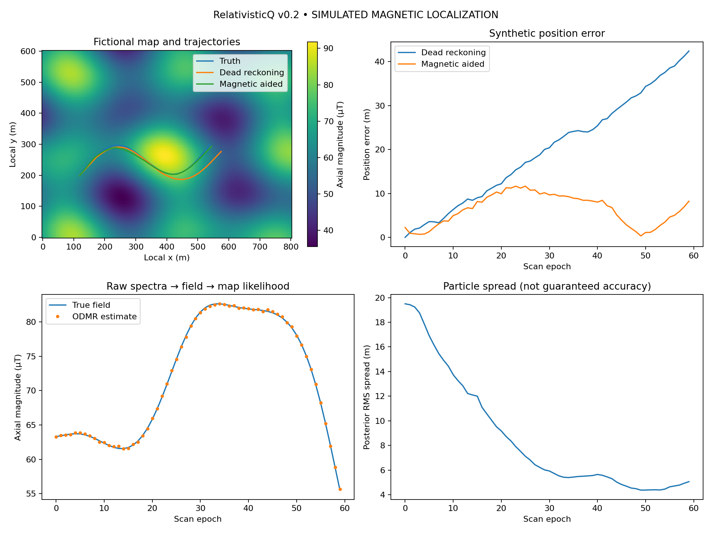

Simulated fixed-axis local tracking. Known starting fix; stationary ODMR scans; fictional map; no hardware or gravity-stack integration.

{
"seed": 17,
"scenario": "nominal",
"steps": 60,
"dead_reckoning_rmse_m": 23.218383434714596,
"magnetic_aided_rmse_m": 7.255800707645549,
"dead_reckoning_final_error_m": 42.41713774314118,
"magnetic_aided_final_error_m": 8.224090031329533,
"measurement_updates": 60,
"median_match_latency_ms": 1.1320914999828346,
"scope": "Synthetic fixed-axis, stop-and-measure local tracking; displacement-level inertial surrogate"
}